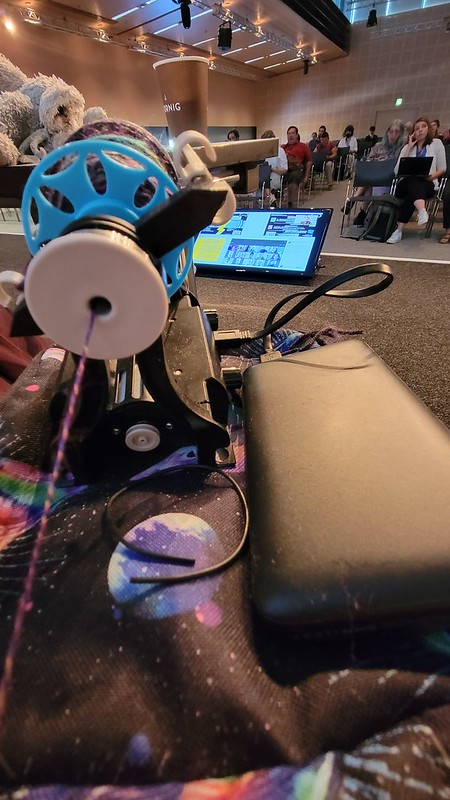

I've never needed summer as badly as I did after this spring, and this summer's conferences, family time, and relatively quiet lulls were just what I was looking for.
Textile Makerspace
Summer brought a few quiet days that allowed me the time to clean up the Makerspace, organize a few things, and spend time with new equipment that I couldn't quite make sense of at first. I've decided this will be the year of the loom at the Textile Makerspace, and we've picked up an inkle loom and a knitter's loom (a folding variation on the rigid heddle), in addition to getting serious about dressing the floor loom that's been in my office since last spring.
Thanks to Making@Stanford, I've got funding for students this whole upcoming year, as well as funding for some basic supplies like thread and needles that we go through a lot of. Eric Kim also got funding for a Makerspace component to his winter course, ## SLAVIC 149: Tails from the Russian Empire: Animals in Russian and Yiddish Literatures, and we have one in our AI course as well. I'm really looking forward to thinking about how to support those courses in the Makerspace, in addition to what we do week by week.
Classes
While I wasn't teaching during the summer, I did spend months tracking the news and discourse around AI in anticipation of the fall class I'm teaching with Laura Wittman and Eric Kim, DLCL 103: Future Text: AI and Literatures, Cultures, and Languages. We'd prepared a syllabus for WAYS approval in the spring (which became an interesting fight about the relationship of AI-generated creations to the humanities), but recognized we'd need to revise it before the start of fall, and probably during the quarter in response to any breaking news. So that course was never far from my mind as I spent time online in the summer. I expected a large turnout but was not prepared to have to look for new discussion section rooms when we raised the cap overall to 60 students, then hit that limit. (Hats off to Judy Nugent for her room-hunting prowess!)
Existing Projects
Over the summer, we finally published the next Data-Sitters Club book, about how to think through building corpora and the implications of those choices. We've got a couple more books waiting in the wings, including the DSC Super Special, the book with Xanda Schofield about topic modeling, and another book in progress about environments.
We were able to launch a basic version of the Senegalese Countercultural Movement website over the summer as a proof-of-concept, with the materials from the Front Culturel Sénégalais accessioned to the Stanford Digital Repository, but for the moment we're holding off on a splashy launch until a few more things are in place.
The Multilingual Harry Potter fanfic project was on hold for the summer, but I expect we'll wrap it up this fall.
There were some delays with the new Global Medieval Sourcebook launch, but we have a plan in place for this fall once all the data is ready.
I still have several things on my to-do list related to the Multilingual DH working group, led by Merve Tekgürler from Stanford and Till Grallert. But the DH 2023 conference included an in-person meeting of many interested folks who had made it to the conference, and it was an inspiring reminder of both how large this community is, and how much work remains to be done.
In my role as ACH representative to ADHO, I attended something like 20 hours of (un-air-conditioned in the heat of summer) meetings at the DH 2023 conference, which included the joyous task of welcoming two new constituent organizations, the Korean Association of DH and DHARTI (based in India). I was talked into serving as Secretary of the Constituent Organization Board, so I have more early morning meetings in my future for this upcoming year as we continue to try different angles on the question of what and who ADHO is for.
This summer, I sorted out a workflow for going from scannedJewish cookbooks to OCR'd text, and a student assistant has helped make it happen. Once we have a few more plain text files, I'll be working on Python scripts for parsing the data into a Django database. Likewise, the historic TAPS costume collection is going to be a December effort, due to how the summer has gone for the TAPS folks.
This fall I'll be returning to the DLCL dissertation project, which will be enriched by some data about career outcomes gathered by Phoebus Cotsapas.
Towards the end of the summer, we presented the work of the Web Archiving working group to library leadership, which decided that it would make the most sense for us to each continue our own work separately, rather than trying to fit it all into a single cohesive program. After consulting with my fellow Academic Technology Specialists, we've put forward a proposal for continuing the Browsertrix Cloud pilotwith a focus on digital scholarship.
This summer, a new exhibit at Hohbach Hall about "Making Global Computing" was installed, and it was delightful to see the work Simon Wiles and I had done on the exhibit text manifest itself in signage and reading material. The exhibit will receive its due recognition and celebration at the Encode/Include event on October 27th, part of the new SILICON (Stanford Initiative on Language Inclusion and Conservation in Old and New media) initiative created by Kathryn Starkey, Tom Mullaney, and Elaine Treharne. Launching SILICON has been no small part of what I've been up to this summer, and I'm really excited about where this project is going as a way to support digitally-disadvantaged languages through font and keyboard development, working on OCR algorithms for newly-encoded scripts, corpus-building, as well as pathways into tech for humanists and general advocacy for language as an important factor for tomorrow's tech leaders to be thinking about.
New projects
Other than SILICON, there haven't been many new projects over the summer, though I've been advising Ty Davidian on his project The Futurist Archive, which is likely to become a Wax 2.0 site once the data is compiled.
Writing
A few longstanding papers have come together over the summer, including a write-up of a talk I gave with Lauren Tilton in 2022 about our work to expand the DMCA exemption, where we dealt with a few requested edits. The Debates in DH volumes on pedagogy, graduate education, and computation are moving along at their respective paces, and I have pieces coming out in each of them. And finally, a piece with Nichole Nomura for Vectors about "The Librarian, The Computer, The Android, and Big Data" (or, the depiction of data-work in a corpus of Star Trek novels) will be published soon.
Thanks to Brandon Walsh from the UVA Scholars Lab, I've been inspired to try to take up a more regular blogging practice, though it may be spread across the DH at Stanford blog, the Textile Makerspace blog, and my personal blog. Over the summer, I've written about Missing Threads in a DH Origin Story, #DHMakes, grief, regret and distance, coming to terms with IDEs, finding 'close enough' text and deformance and the library strategic directions.
Talks and Events
Over the summer I attended both the virtual ACH 2023 conference, and the international DH conference in Graz, Austria. As in 2019, the differences between the two conferences were striking, but it's a topic for its own blog post. At ACH 2023, I did the "#DHMakes Alternate Format Presentation" with Claudia Berger, Alix Keener, Jojo Karlin, Anne Ladyem McDivitt, Amanda Visconti, and Jacque Wernimont -- basically, we hung out in a surprisingly-enjoyable virtual space, talking crafting with people who came by and showing off the long-distance collaborative-making artifact we made together, each contributing a piece. We also curated social media posts with the #DHMakes hashtag across multiple social media platforms during the conference. I also presented as part of the Digital (Humanities) Trace Data: Critical Approaches to Platforms, APIs, and Metrics for Studying DH Communities panel, where Nickoal Eichmann-Kalwara and I talked about the database of DH abstracts and what it tells us about the US DH community's engagement with the international conference. (Take-away point: there's about 20% of ACH that regularly presents at the ADHO DH conference.)
Being part of that 20% (and, in fact, the only person to have presented at every ACH and DH conferences since 2019), I had several things going on at the DH conference. There was a workshop on the TaDiRAH taxonomy organized by Luise Borek that felt like a family reunion, with many people who had worked on the project over the last decade. (I was there at its beginning when I was working on the DiRT tool directory, but left it in good hands and moved on.) I gave a short presentation as part of the roundtable Exploring the Borderlands: A Revolutionary Potential for DH, organized by Luise Borek and Sarah Lang, and my 5-year-old's stuffed elephant Ellie (who she sent with me to "see the world") filled in for Melissa Terras, reading her remarks as she got caught in travel delays. I brought my small e-spinner with me up on stage for that panel, engaging in another kind of "revolution" (that produces yarn) until the drive band broke.

Alex Wingate and I presented a poster about SUCHO, while Lauren Tilton and I presented on the 2021 DMCA exemption as part of a panel on Legal Issues in Digital Humanities, which touched on several interesting developing challenges around AI in addition to those issues with text and data mining. Finally, I presented as part of a panel I organized on Readers, Tropes, and Translations: Directions for Digital Research into Youth Literature, with Agnieszka Backman, Joanna Byszuk, Anouk Lang, and Nichole Nomura. My own presentation felt a bit like a bad joke that my fall 2022 self had played on my summer 2023 self: can we use computational methods to identify Shakespeare-derivative YA books (which usually make a big deal of being Shakespeare-adjacent, as it helps with acceptability by adults)? I tried several methods, focusing on Romeo and Juliet, which (I thought) would be the "easiest" Shakespeare to identify. In the end, nothing worked to tell self-proclaimed Romeo and Juliet derivatives from any other romance YA, but in the discussion someone had what felt like a promising suggestion to try network analysis. Perhaps in another paper. Finally, I unofficially brought the #DHMakes to the DH conference, carrying around different colors of yarn as well as plastic mesh, asking people to share with me their favorite slide, and re-interpreting those slides in micro-projects I would make while listening in conference sessions, before gifting them to the source of the inspiration. That effort also deserves its own blog post, so I'll leave it at that.
My last major event of the summer was the iPres digital preservation conference, where I was the closing keynote. It was the first time I'd had the chance to spend much time with digital preservation folks, whose work feels like a cousin to digital humanities. My conclusion was that I'm grateful that people are thinking through these issues in depth, but it's not quite my thing. But also, so many digital preservation people are wonderfully crafty, and I want to be making-friends with all of them. It was also my first chance to meet new but non-local Stanford library colleague Snowden Becker, and hang out with Dorothea Salo in person, being a big online fan of hers for years. The conference was at UIUC, where I did library school almost 15 years ago now, and since then they've also hired several DH friends into or adjacent to the I-School. Visiting with them was the best way to wrap up the summer.
Other Things
The DH migration to Mastodon seems like it never quite worked. There's a few people who found a good home there, and I have more than a little fondness for it, where the vibes are "secret coffee shop behind the last bookshelf on the left at the quirky local bookstore". But it never became a replacement for DH Twitter.
I was a relatively early Bluesky adopter late in the spring, but I didn't use it much at the beginning because my feed was all chatty celebrities. Once there were more librarians and DH people, Bluesky started feeling more like DH Twitter of the 2010's. As things have continued to get worse on Twitter, Brandon Walsh and I got together to run a form for sharing and requesting invite codes, to try to get more Twitter hold-outs over to what is at least for now a better place. As of today, we've helped over 400 people join Bluesky, and the generosity of the DH community is a beautiful thing to see. (Want to check it out? We've got you covered with invite codes.)